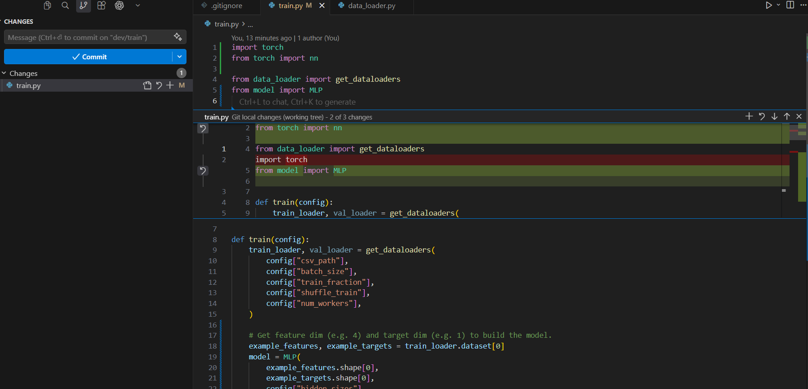
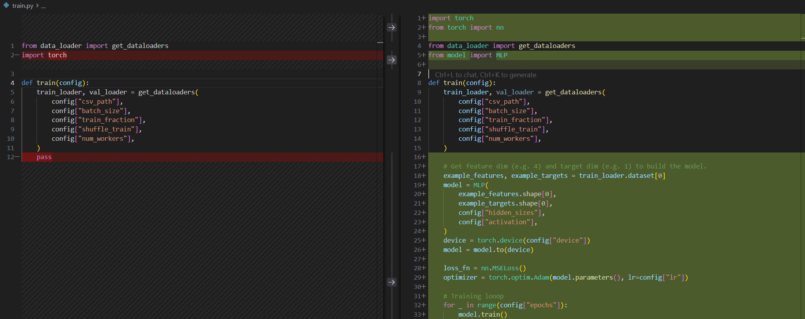
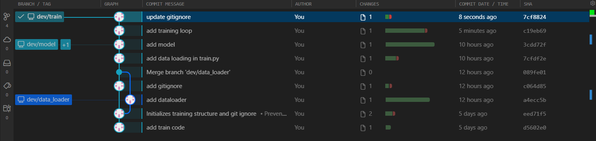
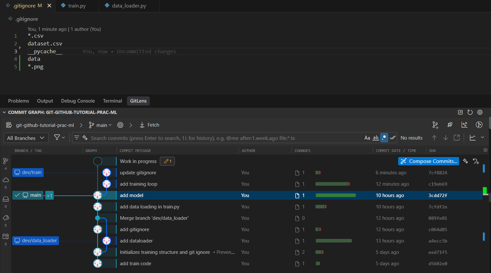
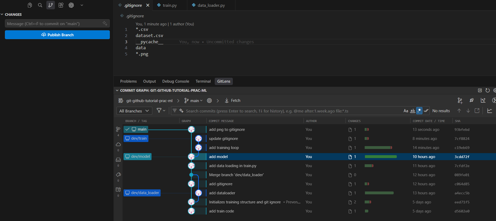
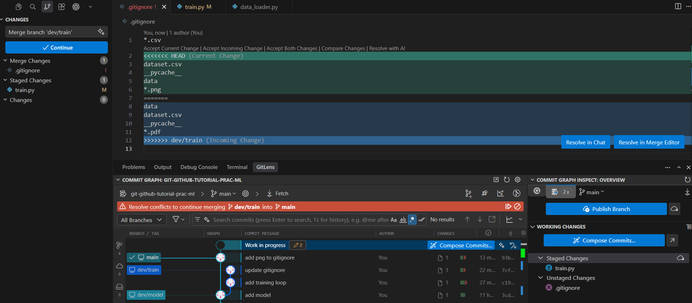
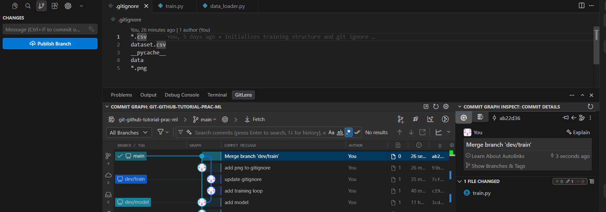

Conflict
Background
Let's make conflict
Let's make an intential conflict
Create a branch for implementing training loop in train.py
This is our update on train.py.
import torch
from torch import nn
from data_loader import get_dataloaders
from model import MLP
def train(config):
train_loader, val_loader = get_dataloaders(
config["csv_path"],
config["batch_size"],
config["train_fraction"],
config["shuffle_train"],
config["num_workers"],
)
# Get feature dim (e.g. 4) and target dim (e.g. 1) to build the model.
example_features, example_targets = train_loader.dataset[0]
model = MLP(
example_features.shape[0],
example_targets.shape[0],
config["hidden_sizes"],
config["activation"],
)
device = torch.device(config["device"])
model = model.to(device)
loss_fn = nn.MSELoss()
optimizer = torch.optim.Adam(model.parameters(), lr=config["lr"])
# Training looop
for _ in range(config["epochs"]):
model.train()
for batch_features, batch_targets in train_loader:
batch_features = batch_features.to(device)
batch_targets = batch_targets.to(device)
predictions = model(batch_features) # Forward pass
loss = loss_fn(predictions, batch_targets) # Compute loss
optimizer.zero_grad() # Clear old gradients
loss.backward() # Backprop: compute d(loss)/d(weights).
optimizer.step() # Apply the update for this batch.
return model
Note
VS Code shows the changes (before staging)

Change views in VS Code
Diff views in VS CodeStage and commit.
At the same time, you also make changes in .gitignore
Stage and commit.

Now, go back to main branch, and make the changes at the same lines where you made changes in dev/train branch.

Commit this change

Now, you have conflicting changes in .gitignore between the two branches:
Both branches modified the same lines of .gitignore differently: the order of data and dataset.csv is swapped, and each branch added a different new entry (*.pdf vs *.png). Git cannot decide which version to keep, so it will raise a conflict.
Merge the conflicting changes
Try merge dev/train to main
You will see an error message in your terminal:
$ git merge dev/train
Auto-merging .gitignore
CONFLICT (content): Merge conflict in .gitignore
Automatic merge failed; fix conflicts and then commit the result.

VS Code shows the conflict statusResolve the conflict by editing .gitignore to the desired final content:
Open .gitignore. VS Code highlights the conflict and shows inline buttons. Click Accept Current Change, Accept Incoming Change, or Accept Both Changes to pick which version to keep, then save.
After resolving, stage and commit:
